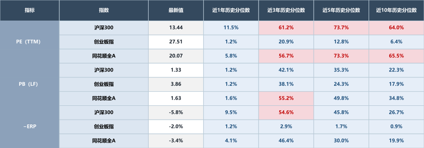

主要宽基指数估值区间
估值区间
| 指标 | 指数 | 最新值 | 近1年均值 μ | 近1年标准差 σ | 最新值相对1年均值的位置 | 近3年均值 μ | 近3年标准差 σ | 最新值相对3年均值的位置 |
|---|---|---|---|---|---|---|---|---|
| PE（TTM） | 沪深300 | 13.44 | 14.12 | 0.47 | μ−2σ 至 μ−1σ | 12.95 | 1.20 | μ 至 μ+1σ |
| 创业板指 | 27.51 | 41.89 | 5.63 | 低于 μ−2σ | 34.77 | 7.48 | μ−1σ 至 μ | |
| 同花顺全A | 20.07 | 22.65 | 1.27 | 低于 μ−2σ | 19.69 | 2.79 | μ 至 μ+1σ | |
| PB（LF） | 沪深300 | 1.33 | 1.44 | 0.04 | 低于 μ−2σ | 1.35 | 0.10 | μ−1σ 至 μ |
| 创业板指 | 3.86 | 5.58 | 0.71 | 低于 μ−2σ | 4.45 | 1.03 | μ−1σ 至 μ | |
| 同花顺全A | 1.63 | 1.84 | 0.08 | 低于 μ−2σ | 1.63 | 0.19 | μ 至 μ+1σ | |
| −ERP | 沪深300 | -5.8% | -5.3% | 0.3% | μ−2σ 至 μ−1σ | -5.8% | 0.6% | μ 至 μ+1σ |
| 创业板指 | -2.0% | -0.7% | 0.4% | 低于 μ−2σ | -1.1% | 0.5% | μ−2σ 至 μ−1σ | |
| 同花顺全A | -3.4% | -2.7% | 0.3% | 低于 μ−2σ | -3.2% | 0.6% | μ−1σ 至 μ |
注：【全A指数选取说明】本文采用同花顺全A（加权），指数代码为 700001.TI。该指数由北京、上海、深圳三地交易所的全部 A 股组成，按同花顺自由流通市值加权计算，反映 A 股市场的整体价格表现。
注：【−ERP 计算说明】−ERP＝10年期国债到期收益率−1 / PE（TTM）。−ERP 越高，股票相对国债的估值越贵。取负后，PE、PB 和 −ERP 的方向一致，数值越高代表估值越贵。
回测结果：1年滚动估值
| 指标 | 指数 | 触及阈值后未来1年 | 触及阈值后未来3年 | ||||||||||
|---|---|---|---|---|---|---|---|---|---|---|---|---|---|
| μ−2σ | μ+2σ | μ−2σ | μ+2σ | ||||||||||
| 样本数 | 胜率 | 收益率中位数 | 样本数 | 胜率 | 收益率中位数 | 样本数 | 胜率 | 收益率中位数 | 样本数 | 胜率 | 收益率中位数 | ||
| PE（TTM） | 沪深300 | 22 | 59.09% | 3.71% | 24 | 70.83% | -11.39% | 20 | 65.00% | 17.79% | 19 | 52.63% | -5.88% |
| 创业板指 | 17 | 35.29% | -6.93% | 21 | 9.52% | 27.26% | 16 | 81.25% | 66.47% | 16 | 6.25% | 69.67% | |
| 同花顺全A | 26 | 65.38% | 4.15% | 18 | 16.67% | 14.80% | 21 | 66.67% | 26.73% | 11 | 27.27% | 14.42% | |
| PB（LF） | 沪深300 | 29 | 55.17% | 6.43% | 26 | 57.69% | -10.42% | 28 | 67.86% | 23.49% | 19 | 63.16% | -19.15% |
| 创业板指 | 26 | 46.15% | -4.69% | 27 | 14.81% | 31.39% | 23 | 86.96% | 84.74% | 21 | 23.81% | 40.21% | |
| 同花顺全A | 33 | 63.64% | 4.38% | 16 | 31.25% | 14.14% | 29 | 82.76% | 27.09% | 8 | 12.50% | 13.05% | |
| −ERP | 沪深300 | 38 | 55.26% | 3.71% | 22 | 45.45% | 1.72% | 33 | 63.64% | 24.29% | 16 | 43.75% | 2.21% |
| 创业板指 | 39 | 51.28% | 2.19% | 19 | 36.84% | 19.42% | 34 | 67.65% | 32.00% | 17 | 17.65% | 46.76% | |
| 同花顺全A | 33 | 63.64% | 9.13% | 19 | 31.58% | 2.76% | 28 | 78.57% | 26.52% | 15 | 40.00% | 1.75% | |
回测结果：3年滚动估值
| 指标 | 指数 | 触及阈值后未来1年 | 触及阈值后未来3年 | ||||||||||
|---|---|---|---|---|---|---|---|---|---|---|---|---|---|
| μ−2σ | μ+2σ | μ−2σ | μ+2σ | ||||||||||
| 样本数 | 胜率 | 收益率中位数 | 样本数 | 胜率 | 收益率中位数 | 样本数 | 胜率 | 收益率中位数 | 样本数 | 胜率 | 收益率中位数 | ||
| PE（TTM） | 沪深300 | 11 | 72.73% | 21.84% | 12 | 50.00% | 0.97% | 11 | 72.73% | 52.40% | 9 | 77.78% | -25.64% |
| 创业板指 | 11 | 27.27% | -16.99% | 14 | 21.43% | 14.31% | 11 | 90.91% | 51.49% | 12 | 41.67% | 15.26% | |
| 同花顺全A | 8 | 37.50% | -7.26% | 13 | 23.08% | 10.97% | 6 | 33.33% | -8.55% | 9 | 77.78% | -16.18% | |
| PB（LF） | 沪深300 | 15 | 33.33% | -5.04% | 13 | 84.62% | -13.25% | 15 | 53.33% | 23.59% | 10 | 60.00% | -22.02% |
| 创业板指 | 7 | 28.57% | -10.37% | 19 | 26.32% | 17.12% | 7 | 100.00% | 84.74% | 17 | 47.06% | 15.57% | |
| 同花顺全A | 14 | 50.00% | -1.00% | 6 | 50.00% | 0.07% | 13 | 76.92% | 19.77% | 3 | 66.67% | -20.68% | |
| −ERP | 沪深300 | 15 | 40.00% | -5.29% | 13 | 76.92% | -12.82% | 13 | 53.85% | 12.81% | 9 | 55.56% | -20.29% |
| 创业板指 | 31 | 32.26% | -8.80% | 6 | 16.67% | 18.90% | 24 | 45.83% | -12.90% | 6 | 0.00% | 40.69% | |
| 同花顺全A | 14 | 50.00% | 1.86% | 4 | 75.00% | -11.73% | 11 | 81.82% | 21.78% | 4 | 75.00% | -20.51% | |
注：【回测方法说明】回测沪深300、创业板指和同花顺全A的 PE（TTM）、PB（LF）和 −ERP 触及 μ±2σ 后的指数表现。原始数据自 2011 年起。
（一）识别触及信号
连续处于上轨或下轨之外时，只计第一次触及。触及上轨后，指标须严格回到上轨以下，才能再次触发。触及下轨后，指标须严格回到下轨以上，才能再次触发。若回测开始时指标已在轨道外，且此前已触及该轨道，须等指标返回区间后再次触及才计入。
对同一指数、指标和滚动窗口，将上下轨信号合并后按日期排序。保留第一条信号，后续信号若与上一条已保留信号间隔小于 10 个交易日，则剔除。
（二）计算未来收益和胜率
以信号触发日的指数收盘点位为起点。未来 1 年收益率＝触发日后第 250 个交易日的收盘点位 ÷ 触发日收盘点位 − 1。未来 3 年收益率同理，使用第 750 个交易日的收盘点位。
触及上轨后，未来收益率小于 0 算胜。触及下轨后，未来收益率大于 0 算胜。收益率等于 0 时计入样本数，胜场计 0。胜率为胜场数除以有效样本数。收益率中位数按各组的原始指数收益率计算，保留正负号。
未来 1 年和 3 年分别筛选具有完整持有期的样本。满 250 个交易日但未满 750 个交易日的信号，只纳入未来 1 年统计。无有效样本时，样本数填 0，胜率和收益率中位数填“—”。
（三）表格配色
胜率大于 50% 涂浅红，小于或等于 50% 涂浅蓝。收益率中位数大于 0 涂浅红，小于或等于 0 涂浅蓝。“—”留白。两张回测汇总表均按此规则着色。
主要宽基指数最新估值的历史分位数

滚动一年/三年估值与EPS（TTM）
PE（TTM）
沪深300
.svg)
.svg)
创业板指
.svg)
.svg)
同花顺全A
.svg)
.svg)
PB（LF）
沪深300
.svg)
.svg)
创业板指
.svg)
.svg)
同花顺全A
.svg)
.svg)
−ERP
沪深300
.svg)
.svg)
创业板指
.svg)
.svg)
同花顺全A
.svg)
.svg)
辅助参考：滚动一年/三年估值与收盘价
PE（TTM）
沪深300


创业板指


同花顺全A


PB（LF）
沪深300


创业板指


同花顺全A


−ERP
沪深300


创业板指


同花顺全A